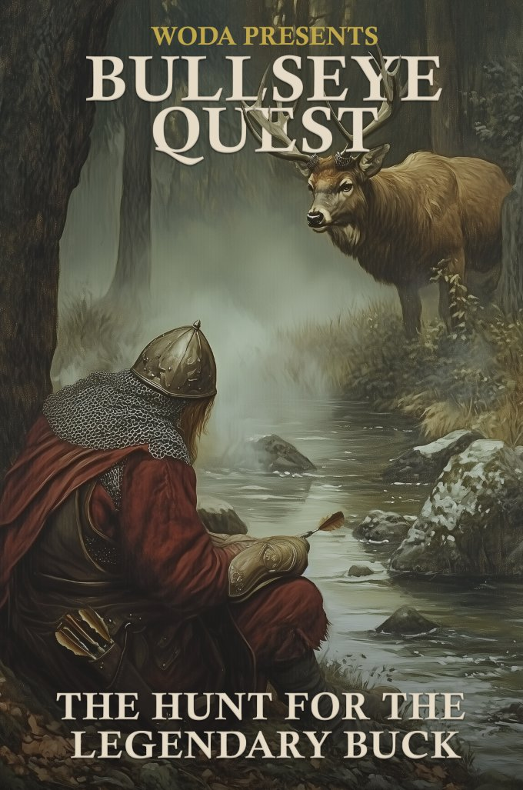

A WODA Game
#1 — The Hunt for the Legendary Buck
A tabletop RPG played on the dartboard. Chalk scores. Voice narrates. Legends are made.
Scroll to begin the quest →
I
King Donut has sent Sir Staples and the Dart Knights out for food for the feast. He expects they return with enough meat to feed the dart community for the celebration.
The woods outside the castle have many dangers including a sneaky rabid fox who lurks about. The Dart Knights set out on their long journey but lo and behold become easily distracted. They see hoof prints of the elusive Legendary Buck.
King Donut would surely be pleased with the buck as a trophy, but this distracts them from their main quest.
Will the Dart Knights return alive?
Will they return with meat for the feast?
And will they capture the Legendary Buck?
II
How many knights answer the call?
| Players | Darts | Turns Each |
|---|---|---|
| 2 | 6 darts | 2 turns |
| 3 | 3 darts | 1 turn |
| 4 | 3 darts | 1 turn |
Game Modes
Full Camaraderie — Solo or co-op. One party, one quest.
Team vs Team — 2–4 per team, parallel quests on separate boards.
Head to Head — 1v1 or 2v2, straight up.
Players decide throwing order by Dart House Rules.
III
One turn per number. No going back.
The quest follows the path of Cricket — one number at a time, in order:
Side quest windows open after 19, after 17, and after 15. The party decides: press on or take the detour?
IV
Draw this on your chalkboard
| Meat | Marks | # | Clues | RF |
|---|---|---|---|---|
| 20 | ||||
| 19 | ||||
| — side quest? — | ||||
| 18 | ||||
| 17 | ||||
| — side quest? — | ||||
| 16 | ||||
| 15 | ||||
| — side quest? — | ||||
| no meat | B | |||
Meat — lbs earned for the feast. Marks — cricket marks (/, X, Ø). Clues — side quest closes on 6 & 11. RF — where the Rabid Fox sits on the tracker.
V
Close a number to start banking meat. Every extra hit feeds the feast.
Hit a number 3 times to close it (doubles count as 2, triples as 3). Once closed, every additional hit earns meat equal to the number's value.
| Number | Meat per Extra Hit |
|---|---|
| 20 | +20 lbs |
| 19 | +19 lbs |
| 18 | +18 lbs |
| 17 | +17 lbs |
| 16 | +16 lbs |
| 15 | +15 lbs |
Bullseye is NOT used for meat — it's reserved for the Legendary Buck shootoff.
VI
Miss the board entirely? You've attracted the fox.
Any time a player throws a donut — all darts miss the active number with zero marks — the fox spawns. Immediately. One bad turn brings her out of the shadows.
The Fox Tracker
The fox doesn't die easily. She's hunted across the entire board. When she spawns, you throw 3 darts starting from her current position on the tracker:
The fox's position persists between encounters. Mark her current number in the RF column.
0 of 3 Hits — Death
The fox kills the knight. They're down — awaiting a saving throw.
1 of 3 Hits — Fox Escapes
Fox retreats. −10 meat. Tracker advances 1. Mark new position on RF.
2 of 3 Hits — Fox Escapes
Fox retreats. No meat penalty. Tracker advances 2.
3 of 3 Hits — Magic Darts ✦
Fox killed instantly. +50 meat. The party earns Magic Darts.
The Grind — Tracker reaches 20
Push the fox to 20 through multiple encounters. Finish her with a bullseye shot. +100 meat.
VII
Down — but not necessarily out
When the fox kills a knight, that player is down. But on each of their turns, they get one chance to crawl back into the fight.
Yet to Be Revealed — Saving Throw
The exact mechanics of the Saving Throw are still being forged in WODA Labs. How hard is it to cheat death? The answers are coming.
Yet to Be Revealed — Resurrection Throw
Whispers speak of a Resurrection Throw — a way for a living knight to bring back a fallen companion. But the ritual's details remain hidden. WODA Labs is still testing the incantation.
Yet to Be Revealed — Magic Darts Reward
The fox is dead, and something glows where she fell. What power do Magic Darts grant beyond the +50 meat? WODA Labs is still deciding what treasure the fox guards.
VIII
The Buck's tracks lead off the main path. Follow them — if you can afford the detour.
At three points on the quest (after 19, after 17, after 15), the party can pursue side quests. This is a group decision.
Cost: 10 meat per player. Spent whether you succeed or not.
Targets: The side quest numbers are 6 and 11. Players rotate throwing at these targets.
Unlocking the Legendary Buck
Close both 6 and 11 (3 marks each) to unlock the Buck at the end of the quest. If either number remains open — no Buck attempt.
Bonus: Each additional close beyond the initial 3 marks on either number reduces the bullseyes needed to kill the Buck by one.
Track closes in the Clues column using standard cricket marks. First circle = 6 closed. Second circle = 11 closed. Anything beyond = bullseye discount.
IX
You've tracked it. You've earned the right. Now close the Bull to claim the legend.
Unlock: Both 6 AND 11 must be closed from side quests.
The shootoff: The party throws at Bullseye. 3 hits to kill the Buck (outer bull = 1, inner bull = 2).
Reduced difficulty: Each extra close from side quests beyond the unlock reduces bullseyes needed by one.
Buying Extra Throws
The party can spend 20 meat to purchase one additional bull throw. Group decision — everyone agrees or it doesn't happen. Repeatable as long as you have meat to spend.
⚠️ The 20 meat cost is currently in playtesting.
Every pound of meat is now currency. Spending it to kill the Buck might drop your victory tier. The feast gets smaller, but the trophy gets closer.
X
How the quest ends
Legendary
250+ meat AND killed the Legendary Buck
"Sir Staples Ascends"
Great
Survived with 250+ meat
"Songs Are Sung"
Good
Survived with 150–249 meat
"Heroes of the Hour"
Shame
Survived with less than 150 meat
"The Long Walk Home"
Defeat
The party fell to the fox
"The Hunt Ends Here"
Team vs Team
The winning party is welcomed at King Donut's feast. The losing party is cast off to Bizarro Land.
Will the Dart Knights return alive?
Will they return with meat for the feast?
And will they capture the Legendary Buck?
XI
What Do You Do?
It's the last side quest window. Here's where you stand:
• 2 players still standing, 1 fallen knight
• 6 is closed. 11 has 2 marks.
• 210 lbs of meat in the stores
• Fox tracker is on number 14
• Side quest will cost 20 meat (10 per living player)
Do you enter the side quest to try to close 11 and unlock the Buck? Or press on, save your meat, and aim for a "Great" ending without the legendary trophy?
You go in. 210 → 190 meat. Your two standing knights rotate throws at 11. First knight hits two 11s — that's the close. 11 is shut. Both circles on the clues column. The Legendary Buck is unlocked.
You press on to 15, then Bull. With 190 meat you're sitting at "Good" tier — but with the Buck unlocked, you've got a shot at Legendary. One bullseye away from the story everyone retells.
You press on. 210 meat stays intact. You clear 15, reach Bull. No Buck attempt — 11 never closed. But your meat stores are strong. You finish at 230 lbs after the final segments.
Good tier. The feast is full. King Donut nods approvingly. But Sir Staples glances back toward the forest, where the Buck's tracks fade into the mist. The legend lives on — uncaught.